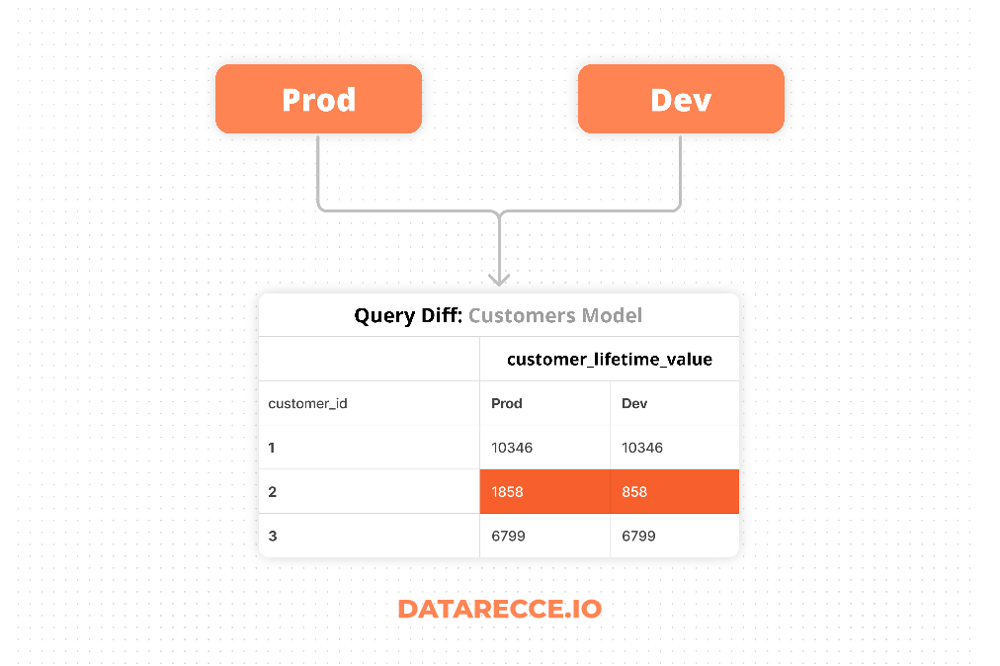
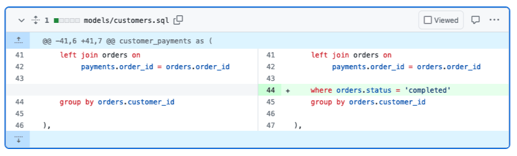
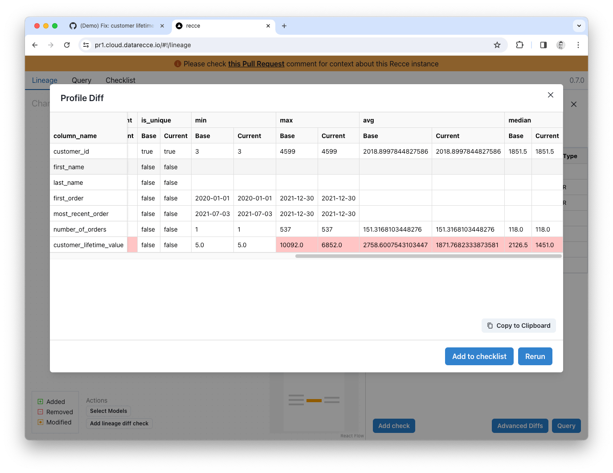
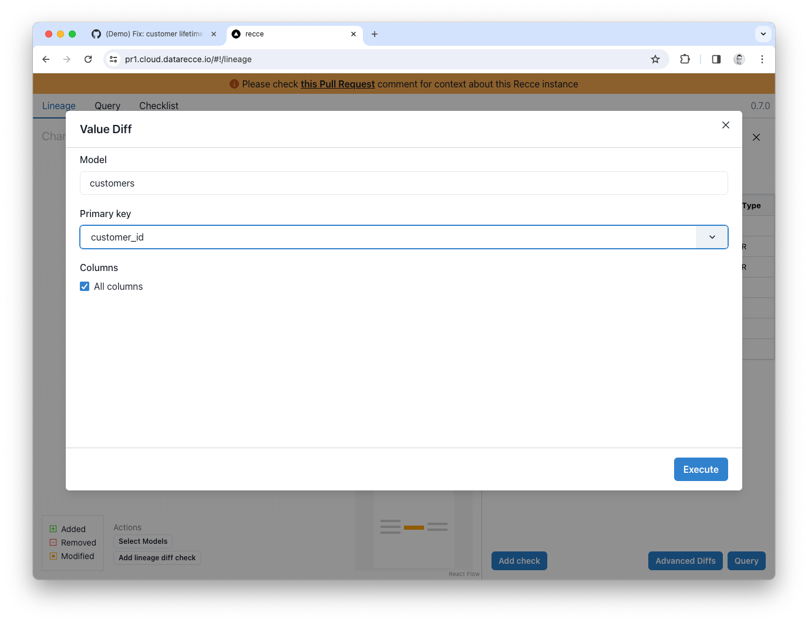
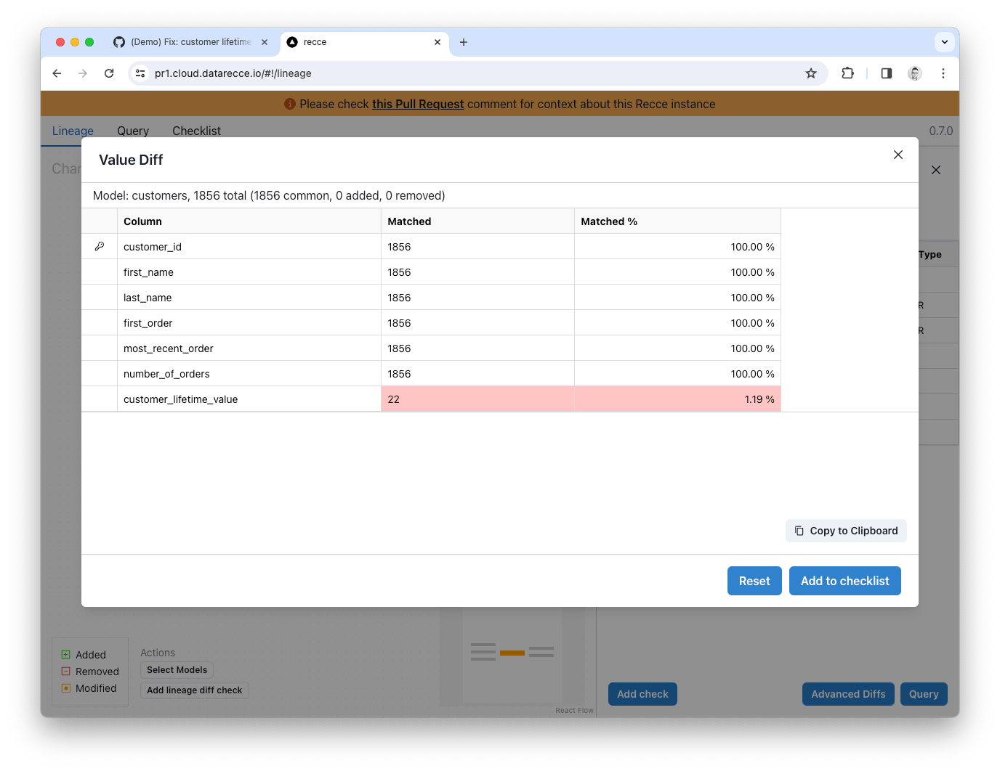
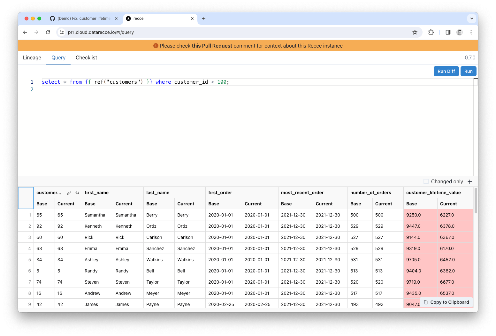
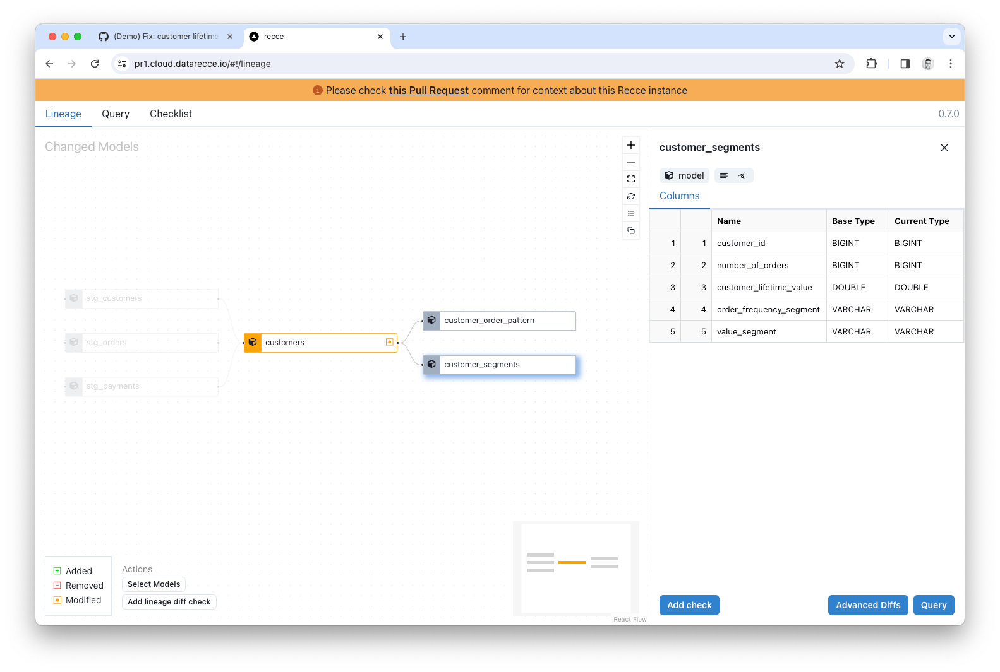
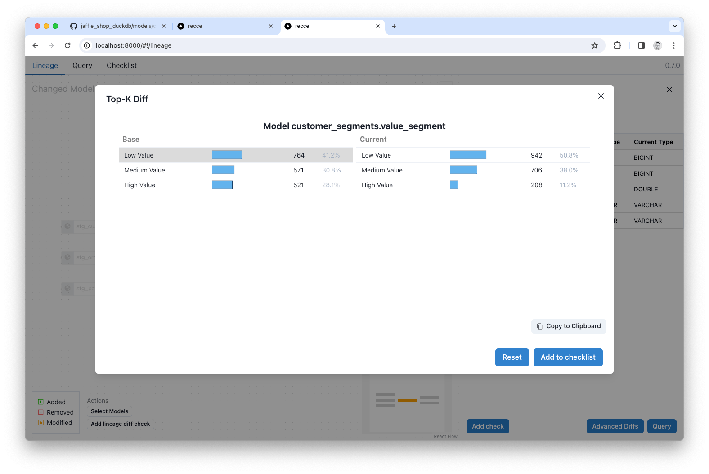
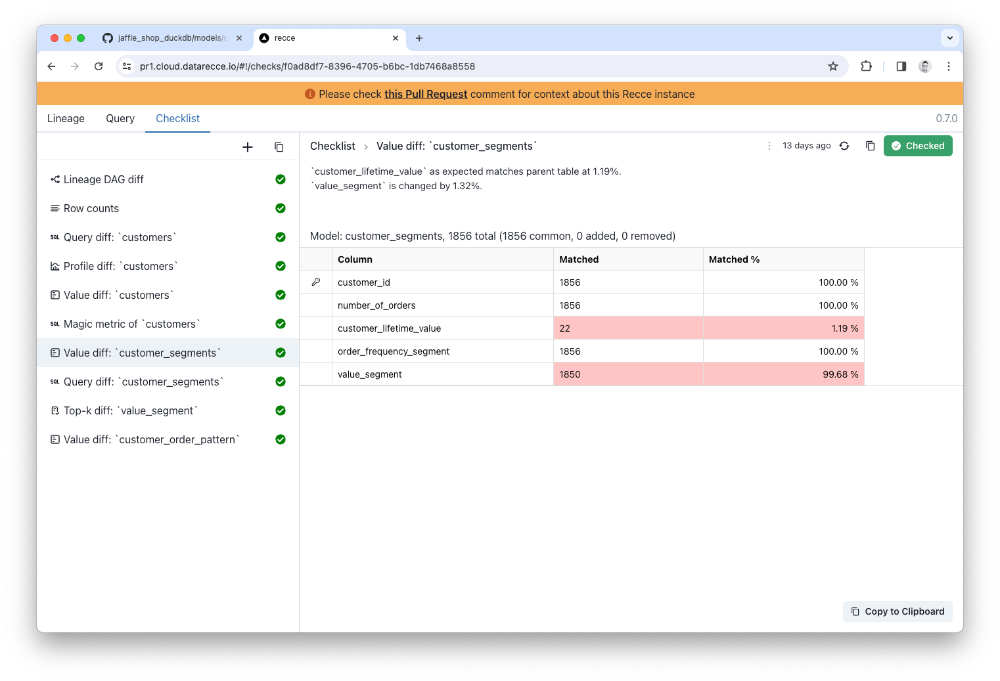

Hands-On Data Impact Analysis for dbt Data Projects with Recce
dbt data projects aren’t getting any smaller and, with the increasing complexity of DAGs, properly validating your data modeling changes has become a difficult task. The adoption of best practices such as data project pull request templates, and other ‘pull request guard rails’ has increased merge times and prolonged the QA process for pull requests.
{kind=link}

The difficulty comes from your responsibility to check not only the model SQL code, but also the data, which is a product of your code. Even when code looks right, silent errors and hard to notice bugs can make their way into the data. A proper pull request review is not complete with data validation.
What is data validation and why you need to do it
Validation is the process of checking that your work is correct and achieves your intention. Common forms of validation are data change impact analysis and regression testing.
With impact analysis checks you want to verify that any impact observed is desirable, such as a change in business logic for which you would expect to see data change. Regression testing, on the other hand, is about confirming that data change did not take place. This is useful for cases in which any change to modeling code should not impact the data.
For both of these cases comparing the resultant data from your dev branch with a known-good baseline is the key - Show me what’s different, or help me validate that nothing changed. This is where Recce can help.
Data Validation Toolkit: Recce
Recce is a toolkit especially designed to validate data modeling changes in dbt projects by comparing two dbt environments, such as your dev branch and production data. Recce can help you validate your changes during development, and then use those validations in your PR comment for better PR review - the ultimate purpose of modeling validation.
Use Case: Data Impact Analysis in dbt’s Jaffle Shop
Jaffle Shop is dbt’s standard intro project for dbt, so hopefully everyone is familiar with it. For this use-case demo, I’ll show how to go from a modeling code change in Jaffle Shop and validate that change using the check suite diffing of tools in Recce.
Follow along with the drill down steps detailed below by using the online Recce demo, and the actual PR:
- Online Recce Demo: https://pr1.cloud.datarecce.io/
- PR: Fix: customer lifetime value calculation in customers
The code change
The code change for this example is simple. It’s a one-liner in the Customers model that modifies the calculation used for customer_lifetime_value to only include completed orders.
{kind=link}

The expected impact
This is a change to business logic (maybe more a bug fix), so we would expect to see data impact. As the engineer working on the PR, you’ll already have an expectation of the type of impact you should see.
Previously, the calculation for custom_lifetime_value included all orders, regardless of status, meaning returned, and return_pending were erroneously included. After adjusting the calculation we would expect to see:
- An overall reduction in the
customer_lifetime_valuefigures in this table. - Impact to downstream tables that use this figure
We don’t know the scale of the impact, yet. Let’s first validate our expectations and then check the impact.
Data drill-down process
For a small change such as this, you might go straight to some smaller data spot-checks, but in larger projects, or with more complex updates, it’s better to follow a process of ‘drilling down’ into the data from high level checks, and then narrowing the focus to spot-checks. This will give you the full overview of impact to model and then give you the clues about what to check next.
Impact Overview
Lineage DAG Diff shows how the DAG has changed based on your branch code and shows added, removed, and modified models.
{kind=link}
In the Lineage Diff for this example, you can see that only the customers model has been modified.
Clicking the model pulls up the schema and you can check the row count. If there were schema changes they would be shown here (added, removed, and renamed columns). We don’t see any indication of change to the schema, the row count shows no change, and the only modified model is the customers model, so you have validated that there is no undesired change to the high level structure of the project.
Note: Lineage Diff differs (ha!) from the regular dbt lineage DAG because it shows the state of the DAG compared to another state. Whereas the dbt docs lineage DAG shows only the current state.
High-level data impact assessment
The next stage of validation is high-level assessment. There are a number of checks that you can employ for this, currently Profile Diff, Value-Diff, and Top-K Diff. Each providing a different statistical comparison to your baseline data.
Profile Diff
With the Customers model still selected, click the Advanced Diffs button and click Profile Diff.
{kind=link}

The Profile Diff shows lots of stats for each column but, for this modeling change, check the min, max, and avg. You can see that the average value for the customer_lifetime_value column has dropped, which confirms our expectation, because a lot of orders have been excluded from the calculation now.
Value Diff
A Value Diff is also a good way to get a high level overview of change to a model. With the Customers model selected in the Lineage, click Value Diff from the Advanced Diffs. Select customer_id as the primary key, and check the All Columns checkbox, then click the Execute button.
{kind=link}

The Value Diff shows the percentage match for each column:
{kind=link}

All columns are 100% match, except the customer_lifetime_value column, which now shows only 1.19% match (2 rows) - That’s quite a lot of impact, you better spot-check some of the data! ;-)
Fine-grained data spot-checks
Query Diff enables you to run a query against both environments, and diff the difference. It’s the best way to spot-check data and see what’s different. You can use any macros that are installed in your dbt project, and in a lot of ways this is like creating an ephemeral model especially for the purpose of data validation. In the simplest form, we can just select a subset of rows and see where the change is.
With the Customers model still selected in the Lineage Diff, click the Query button at the bottom right and then adjust the query to select a subset of data:
Note: Avoid using LIMIT in Query Diff because LIMIT does not return the same rows each time, which is required form a useful query diff.
Click Run Diff to query both dbt environments.
When the results are returned click on the key icon in the customer_id column to confirm the primary key. Any columns with a mismatched value will be displayed in red.
{kind=link}

Spot-checking the customer_lifetime_value column you can see that the current value (the dev branch) are all decreased. This is correct as the calculation we adjusted should only result in a decrease in total order value.
Also, from the Value Diff we ran earlier, we know that only the customer_lifetime_value column should have changed, and that’s confirmed from this Query Diff.
Checking downstream impact
This code change updates a key model, and the customer_lifetime_value column is used downstream in the customer_segments table. With the impact being so great (~99% of customer_lifetime_value has changed) we should check how this affects downstream models.
{kind=link}

Running a Top-K Diff on the value_segment column of customer_segments shows how the distribution has changed with a notable reduction in customers categorized as ‘High value’.
{kind=link}

Given the change in distribution, if this was a real world situation, you might choose to notify downstream stakeholders.
The Checklist
The process above demonstrates how you would validate your work during development but, as mentioned, the ultimate purpose of data validation is to provide proof-of-correctness of your work for PR review.
At each stage in the validation process Recce allows you to add a validation check to the checklist, along with your notes. Just click the Add to Checklist or Add Check button when you see it, and the current validation check will be added to your checklist.
{kind=link}

In the checklist you can add a note for your validation to explain your findings and provide context. Then, when you’re ready to create a PR, you can copy the checklist items into your PR to help the reviewer understand and sign-off on your work.
Conclusion
In the above steps, you performed a data impact analysis and successfully validated the code changes by inspecting the data at varying grains of detail.
Check back for more articles in the future that look at other use cases such as validating a refactoring job, and also how to make the most of Recce validations in your PR comment.
Get started with Recce
Recce OSS is available on GitHub now. Follow the instructions in our Getting Started guide to start using Recce to validate your data modeling changes in your project.
- GitHub: DataRecce/Recce
- Docs: DataRecce.io/docs
- Discord: Recce Community